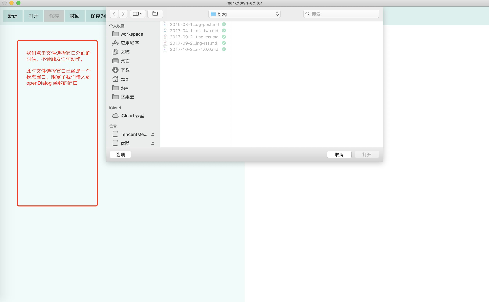

本文内容
创建文件选择框
我们有时候需要让用户选择文件，可以使用 dialog
const {app, BrowserWindow, dialog} = require('electron');
function getFileFromUser() {
const files = dialog.showOpenDialog({ // 弹出文件打开对话框
/**
* 对话框可以设置有不同的属性 这里表示对话框只选择 一个 文件而不是目录或者多个文件
* 其它可用的有：openDirectory multiselections
*/
properties: ['openFile'],
/**
* 限定能够选择的文件的类型
*/
filters:[
{name: 'txt文件',extensions: ['txt']},
{name: 'markdown文件',extensions: ['md','markdown']}
]
});
files.then(arr => {
// arr.canceled 表示用户是否点了取消选择文件，如果是的话，那么 arr.filePaths 就是空数组
// console.log(arr.filePaths); // 这个路径是选中文件的数组，我们选择单个文件数组就只会有一个值
if(arr.canceled){
return;
}
const filePath = arr.filePaths[0];
const content = fs.readFileSync(filePath).toString();
console.log(content);
});
}
在 macos 显示如下

我们创建了 2 个文件的过滤选项，macos 要点击选项这里才能进行选择使用哪个选项，所以为了避免麻烦，可以只使用默认的一个

支持模态框
function getFileFromUser(window) {
const files = dialog.showOpenDialog(window,{ // 弹出文件打开对话框
/**
* 对话框可以设置有不同的属性 这里表示对话框只选择 一个 文件而不是目录或者多个文件
* 其它可用的有：openDirectory multiselections
*/
properties: ['openFile'],
/**
* 限定能够选择的文件的类型
*/
filters:[
{name: 'txt文件',extensions: ['txt']},
{name: 'markdown文件',extensions: ['md','markdown']}
]
});
files.then(arr => {
// arr.canceled 表示用户是否点了取消选择文件，如果是的话，那么 arr.filePaths 就是空数组
// console.log(arr.filePaths); // 这个路径是选中文件的数组，我们选择单个文件数组就只会有一个值
if(arr.canceled){
return;
}
const filePath = arr.filePaths[0];
const content = fs.readFileSync(filePath).toString();
console.log(content);
});
}
function appReady() {
mainWindow = new BrowserWindow({
// width: 100%,
// height: 600,
webPreferences: {
nodeIntegration: true
},
show: false // 刚创建出来时，不要显示，避免先显示短暂的白屏
});
mainWindow.maximize(); // 最大化 不等于全屏，最大化是保留系统任务栏等的
mainWindow.loadFile('app/index.html');
mainWindow.on('close', () => {
mainWindow = null; // 关闭窗口后，将其设为 null
});
mainWindow.once('ready-to-show', () => {
mainWindow.show(); // 主界面加载完成了才显示
getFileFromUser(mainWindow);
})
}
效果如图

当我们向 showOpenDialog 传入的第一个参数是 BrowserWindow 的时候，这个文件选择框将会变成这个 BrowserWindow 的模态窗口，阻塞 BrowserWindow 的运行